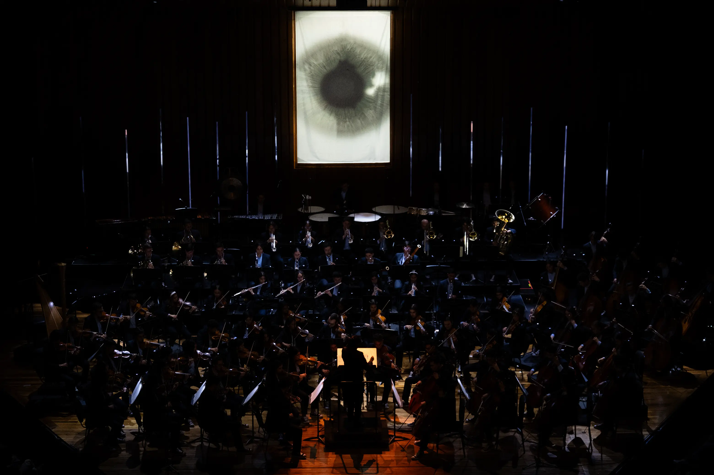

Gira Inquebrantables — Filarmónica Joven de Colombia
Obra interdisciplinar multimedia creada por el colectivo Metanoia junto con la Filarmónica Joven de Colombia. Acompañó en vivo la Sinfonía N.° 2 de Rachmaninov en los principales teatros del país.